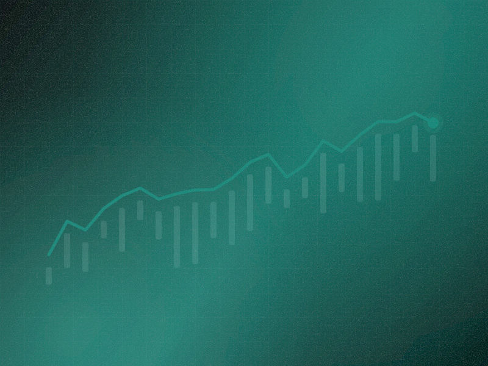

Portfolio dashboard
Positions, exposure and attribution in one view, with drill-through from a headline number to the trades behind it.
Market data, sentiment and research in one investment workspace.
An AI investment-intelligence platform that pulls market data, news sentiment and analyst research into a single workspace, so an investment team can go from a question to a defensible answer without leaving the screen.

01 · The problem
A mid-sized asset manager was running its process across four terminals, two data vendors, a shared drive of PDFs and a group chat. Analysts spent more of the week assembling context than forming a view.
They had tried generic AI assistants and abandoned them. The models produced fluent summaries with no lineage, and an analyst cannot put a number in front of an investment committee when they cannot say where it came from.
02 · What we did
We treated citation as a hard product constraint rather than a feature. Nothing surfaces in Kilwa without a source object attached: a price series, a filing paragraph, a dated news item. If the system cannot cite it, the system does not say it.
The research assistant was built as a retrieval-first pipeline. Questions are decomposed into structured sub-queries against the market store and the document index, results are ranked, and only then does a model write prose over material the analyst can click straight through to.
An answer an analyst cannot trace is not an answer. It is a liability.
Two of the screens that carry the most weight in daily use, rebuilt here from the production design system.
Portfolio, citedEvery headline number drills through to the trades and series points that produced it. Nothing on this screen is unsourced.
Citation is a hard constraintThe assistant answers only from retrieved material. A sentence that cannot be sourced is rejected before it renders.
Grouped by the job each set of capabilities exists to do, rather than by which team built it.
Positions, exposure and attribution in one view, with drill-through from a headline number to the trades behind it.
Streaming prices and macro series with configurable alerting per instrument and threshold.
An analyst pins a thesis to a name and the workspace tracks evidence for and against it over time.
Side-by-side modelling of assumptions with the deltas made explicit rather than buried in a spreadsheet.
Questions decompose into structured retrieval before any generation happens, so answers are assembled from sources rather than recalled.
Every sentence carries its provenance. Clicking a claim opens the exact passage or series point it rests on.
Semantic search across annual reports, transcripts and internal notes, scoped by entity and date.
Automatic side-by-side briefs across a peer set, built from the same cited material.
News and transcript sentiment scored per entity with the underlying articles always one click away.
Macro dashboards per market with the indicator history and revision trail intact.
Movement that breaks an instrument's own historical pattern is raised rather than waiting to be noticed.
A morning brief assembled from overnight movement across everything the desk holds or watches.
Layer by layer, with the reason each one exists, because the reason is usually the interesting part.
Scheduled and streaming connectors normalise vendor feeds, filings and news into a common entity model with revision history.
A time-series store for market data alongside a vector and keyword index for documents, queried together rather than separately.
Hybrid dense and lexical retrieval with reranking, returning source objects that the UI can render and link.
Constrained generation over retrieved passages only, with a citation validator that rejects any unsupported sentence.
A streaming React workspace where answers render progressively with their citations attached.
Technology
Measured against how the operation ran before, not against a benchmark chosen after the fact.
Every generated claim is traceable. Analysts can take output into an investment committee and defend it line by line.
Four tools collapsed into one workspace. Context assembly stopped being the bulk of the working week.
Sentiment became evidence, not vibes. Scores always open onto the articles and passages that produced them.
Latency held under load. Median answer time stayed near three seconds as the document corpus grew past a million passages.
How it ran
Traced how three analysts actually built a view, from first question to committee memo.
Entity model, ingestion connectors and the combined time-series and document stores.
Hybrid retrieval, reranking and the citation validator that gates generation.
Dashboard, watchlists, scenario comparison and the streaming assistant surface.
Load testing against a full corpus, access controls and audit logging for regulated review.
One connected system for a warehouse that ran on paper.
A mobile-first ERP for warehouse and e-waste operations that replaced a decade of spreadsheets, paper travellers and radio calls with a single connected system that works on the floor..
Where candidates move, and where they stall.
A recruitment analytics platform that turns an applicant tracking system's raw event log into a picture of where a hiring funnel actually leaks, with the bottleneck named rather than left to be inferred..
Clinical translation where a wrong word has consequences.
A translation platform built specifically for clinical settings, where general-purpose translation is not safe enough and a verified medical dictionary sits between the model and the patient..
Tell us what you run. We will get back to you as soon as possible with what we would build for your situation and, just as usefully, what we would leave out.